熟悉华与华案例的人会发现，在华与华前后，品牌形象表现为两个非常明显不同的阶段。在华与华前，是模糊的；而在华与华后，是清晰的。在华与华前，是众说纷纭的；在华与华后，是众口如一的。这种前后对比的差异就是品牌是否定型的差异，品牌没定型就是众说纷纭，品牌定型后就是众口如一。很多企业可能经营了十年，二十年，三十年，做的不错，品牌也有一定基础，但多是见招拆招，随机应变，没定型。创立于 1991 年的丰茂烤串，在产品和体验上都是行业内的领先品牌和代表品牌。“我们店开得多了，不少人都知道丰茂烤串了，但是在‘丰茂烤串’下面就没有什么了，丰茂烤
串是什么呢？”丰茂烤串董事长尹龙哲先生，在和项目组沟通的时候，也提出了类似的问题。品牌定型，老板才能定心，实现长治久安，基业长青。而要想品牌定型，首先要回答品牌是什么。
华与华创造并提出了品牌三角形理论，即“产品结构”、“话语体系”和“符号系统”。所有的品牌工作，就是这三件事；没有任何一件关于品牌的工作，不在这三件事之内；在这三件事之外，也没有任何事情与品牌有关。本期文章，我们将为你解析，华与华是如何通过品牌三角形，帮助丰茂烤串搭建起完整的品牌架构，并且设计出烤串行业内统治性的超级符号！让丰茂烤串在品牌层面建立起行业领导者的超级势能！
1创意在烤串行业内最具统治性地位的超级符号每次华与华的设计一出来，你会发现就是它，就不可能是别的第二个，而且它能成为这个行业里面统治性的符号，能够代表整个行业！丰茂烤串就是这样的又一个案例。这里面就来自于华与华对标志的认识，即"信号"，"识别"，"图腾"的三位一体，而且永远是把信号放在第一位。

微观经济学里说：广告是企业为了应对信息的不对称，给顾客发信号。是我们发射一个信号，谋求顾客的一个行为反射，达成销售和播传。所以对于品牌标志而言，信号功能永远是放在第一位的。但是目前市场上的主要现象是，识别有了，图腾有了，但是信号没有了！没有发射信号就没有行为反射，一旦信号没了，就什么都没有了。为什么出现这种情况呢？这就要说到全球品牌的历史性错误。VI系统是全球品牌的历史性错误识别就是 VI 系统的“ Identity ”， VI 系统就是视觉识别系统。用视觉识别系统做品牌，追求的是要和同行不一样，让消费者识别。但识别不是我们的目的，因为识别出来也不一定带来销售。做品牌的最终目的是要发出信号，谋求受众的行为反射。就像是我们给蜜雪冰城设计招牌和门店，不是为了区隔奶茶同行，我们的目的是发信号告诉所有人，这里有奶茶和冰淇淋出售，快来买。
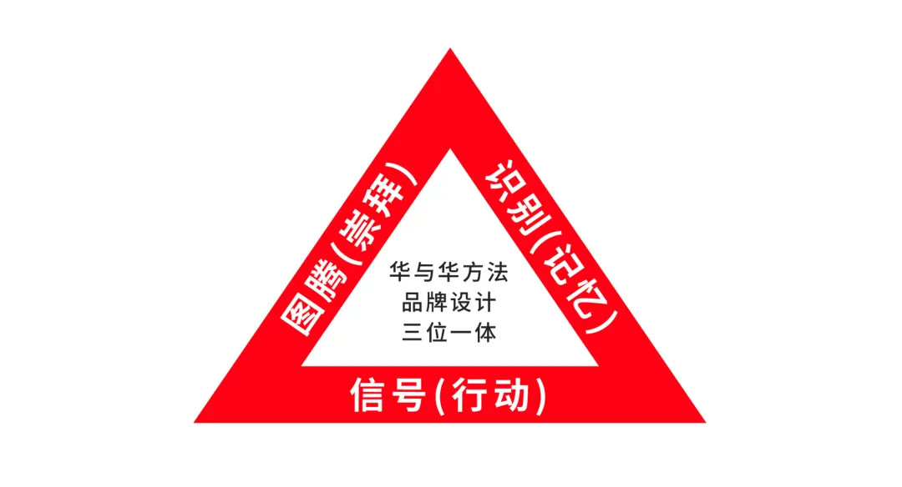
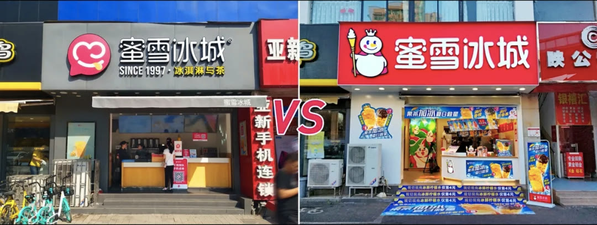
全球品牌的 VI 系统以识别为核心诉求，是因为“ Brand ”这个词有问题！“ Brand ”的词源是“烙印”的意思，烙印就是为了区隔，以前人们放牛的时候，大家的牛都放在一起吃草，容易分不清，所以你烙一个三角形，我烙一个圆圈，这样就可以把各家的牛区分开来。把“烙印”和“区隔”当作“品牌”，所以整个行业倾向于识别设计。
而品牌一旦建立在识别上，就很容易被企业自己图腾化。就像现在企业搞团建的时候，同事之间一分队，马上就开始取队名，画队旗一样，这是从原始人就开始的图腾需要，企业内部也需要图腾来凝聚团队。企业把品牌标志理解为图腾，并且认为它也是顾客的图腾。但是对于顾客而言，品牌标志其实是一个产品和服务类别的信号，不会和企业一样对它产生图腾崇拜。由于 Brand 词源含义是“烙印”， VIS 又以识别为核心诉求，企业又以“图腾”来自我满足。于是，品牌形象越来越有逼格，设计越来越“高级”，“信号”反而越来越弱，消费者没有行为反射，最后广告无效！所以华与华方法提出，品牌标志是信号，识别，图腾的三位一体，并且要始终把“信号”和“信号能量”放在第一位，这是我们一直都能成功的哲学真因。丰茂烤串原有的品牌标志设计，就是从识别功能出发，将品牌名称的第一个“丰”字提取出来，异形为“丰字符”的视觉信号系统，虽然做到了和别人都不一样，但是顾客不知道这个信号要他们做出什么样的行为反射。
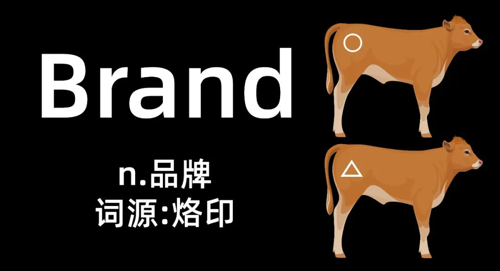
而我们做品牌标志，首先要考虑的就是我们要发射什么信号。两千年前，酒馆在门口大大地挂一个酒字，路过的人就知道你是卖酒的，因为你对他发送了这样的信号，这里的“酒”字，比店家的名字（现在又叫品牌）更重要，因为他是路人更需要的信号。直到现在，仍然有不少烧烤店会把“串”字作为侧招大大的放在店门口！
继承烤串五千年的文化原力中文里的“串”字是象形兼指事字，图形即文字，文字即图形。串字从象形文字诞生至今，始终都保持着这一形态，积累了五千年的文化原力，这就是烧烤品牌能够发射的最强的信号！
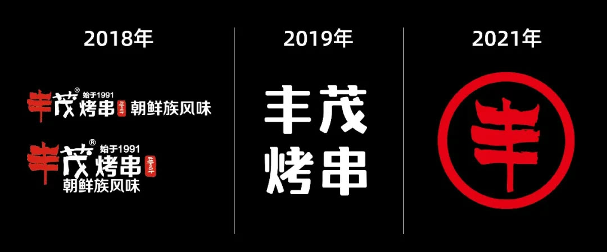
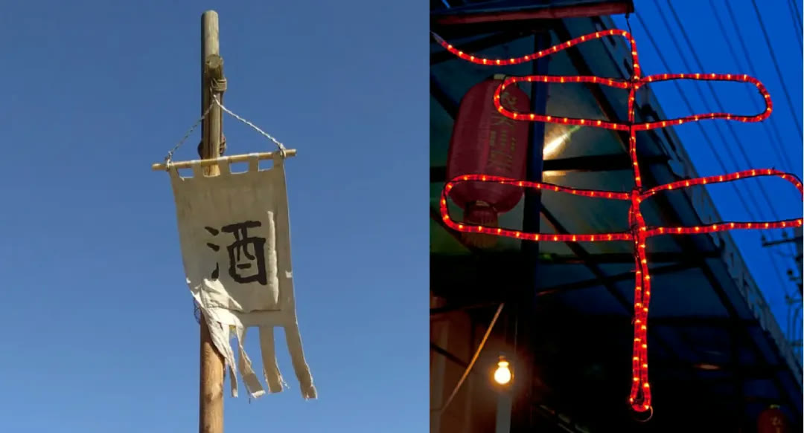
所以我们发挥了品牌与生俱来的戏剧性，将丰茂品牌寄生在图形化的“串”字符上面，创意出了“丰字串”的符号。这样，我们就能一边发送“这里可以撸串”的销售信号，一边发送品牌的识别信号。用品类来表达品牌，让品牌标志直接实现销售！
用视觉强制性符号让刺激信号能量最大化信号系统包含了生理心理学，就是巴甫洛夫的两句话：第一，人的一切行为都是刺激反射行为；第二，刺激信号能量越强，则反射越大。“丰字串”向顾客发送了一个“这里可以撸串”的信号，谋求顾客进店撸串的行为反射。如果想要让更多的顾客进店撸串，就要放大“丰字串”的刺激信号能量。而有一种符号的信号刺激，能够形成强烈的“反射”，释放出巨大的心理和社会能量，拥有绝对的视觉权力，这样的符号我们称之为视觉强制性符号！而眼睛就是我们已知的视觉强制性最强的视觉符号。
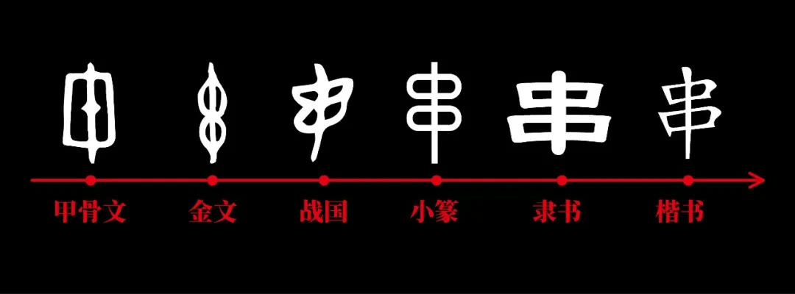
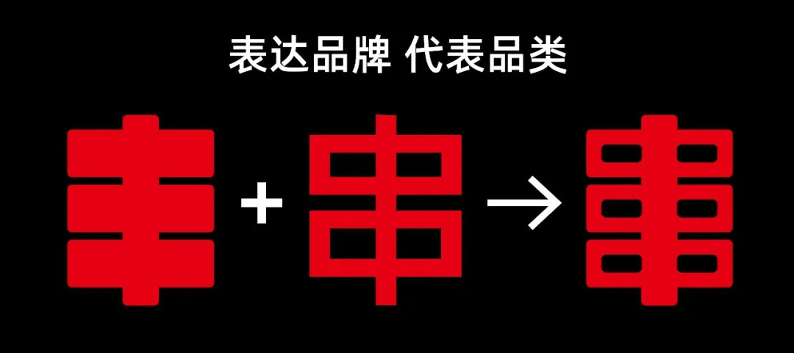
因为注视眼睛是人类天性，人们在交流时总爱看着对方的眼睛，人们在盯着任何物体的时候，也是首先看向眼睛。而且一旦有一双眼睛看向你的时候，你的视线就会不由自主的停下来和它对视！大家可以从自己身上去观察。人对于外界所有的视觉现象，最敏感的就是眼睛。英国埃塞克斯大学等机构在《生物学通信》杂志上发表的一篇报告中，描述了这样一个实验，他们让志愿者看各种生物的图片，有的生物眼睛长在头上，有的生物眼睛长在比如手臂的其它位置上，然后对志愿者的目光进行追踪。结果显示，志愿者第一眼通常都会往图片中间看，然后迅速转移到眼睛的位置，并更多的注视那里。如果图片里的眼睛长在头部上，志愿者就会盯着头部区域；如果眼睛长在其它位置，志愿者就不会看向头部，而是找到眼睛后并锁定那里。研究人员说，这证实眼睛在心理学上有特殊作用。所以当我们为“丰字串”添加了视觉强制性最强的符号——眼睛，“丰字串”的刺激信号能量就会得到几何级的放大！
最重要的是，通过这个创意，我们得到了一个能够注册的，把行业信号私有化的超级符号，相当于我们直接将“串”字注册成了品牌资产，为丰茂烤串摘取了烤串行业里面唯一的王者符号！
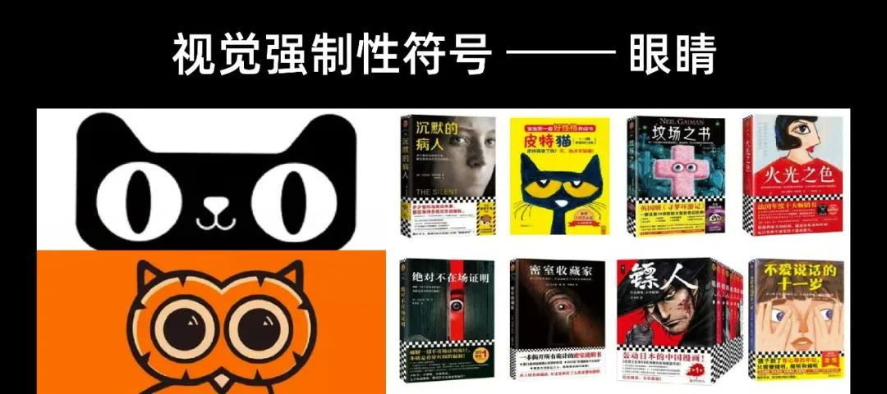
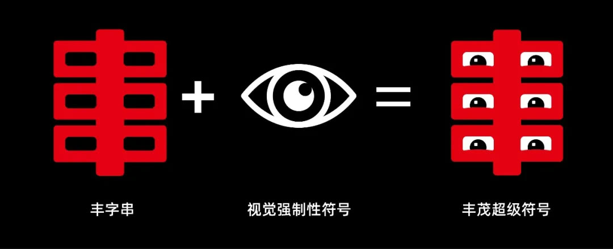
2战略定位正餐级烤串领跑烤串正餐时代丰茂烤串从 1991 年创立至今，整个烧烤行业经过了三个发展阶段：烤串路边摊的 1 . 0 时代。这个时候的烧烤主要以路边摊夜宵小吃为主，三四个小桌子，烟熏火燎。而丰茂烤串在创业之初，就通过自主研发无烟烤炉，把烧烤搬进了室内，直接进入 2 . 0 版本。室内经营的 2 . 0 时代。随着城市化进程，之前的露天烧烤开始逐渐被规范到室内，开始出现室内烧烤店。而丰茂烤串在这个阶段已经走出延边，开向全国，完成了全国连锁品牌的升级，提前进入 3 . 0 版本。品牌连锁的 3 . 0 时代。随着入局者越来越多，烧烤从此前有品类无品牌的状态，进入到品牌连锁化时代，丰茂烤串也在这个时候快速发展，在全国开出了 50 多家直营门店，所到之处经常都是排队第一，业绩第一！可以说，丰茂烤串的发展史就是烧烤行业的发展史，并且始终领跑着行业发展！
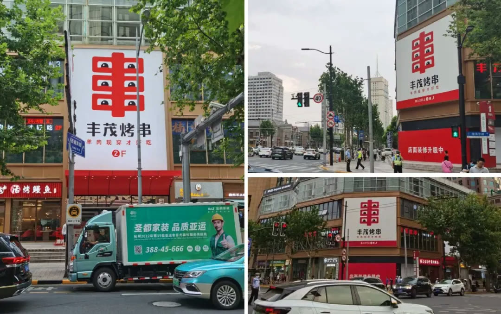
可以说，丰茂烤串的成功真因，就是颠覆了路边小摊小贩的传统烧烤，通过自主研发出无烟烤炉，极致的干净，环境，服务，食材和烧烤技术等，把烧烤从街边店开进了商业中心，并且一度成为了百度，阿里等互联网大厂团建撸串的首选。
迈克尔波特说，战略定位就是有目的地选择一整套不同的运营活动，以创造一种独特的价值组合，带来三个结果：独特的价值，总成本领先，竞争对手难以模仿。
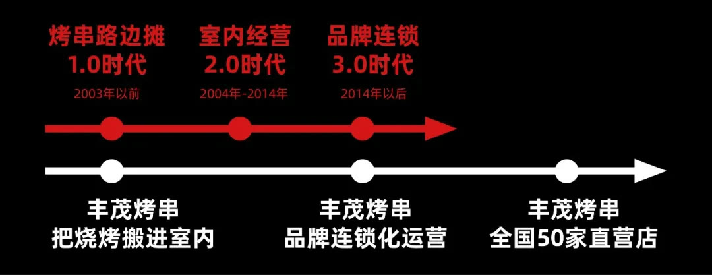
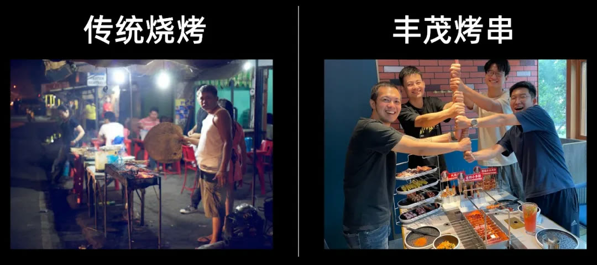
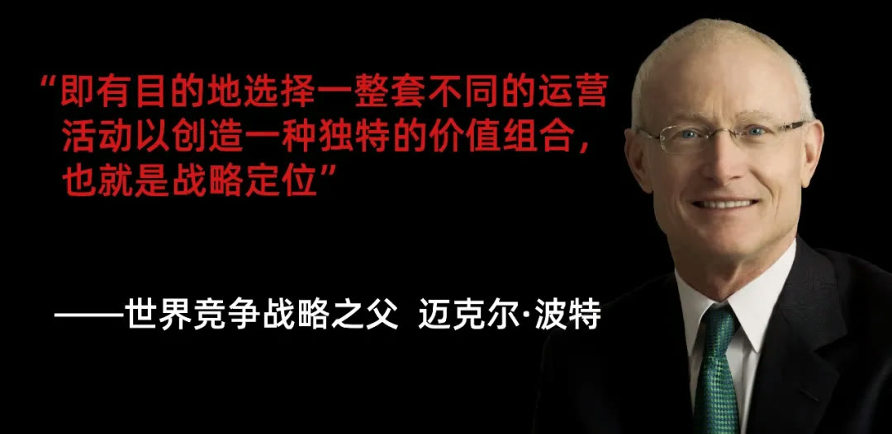
我们发现丰茂烤串在干净高档的环境、专业优质的服务、高标准的烤串、商业中心的开店偏好等方面，已经不自觉间领先了其它同行，而这组独特的经营活动组合起来，就是把烧烤当作正餐来运营，来丰茂烤串撸串的顾客，追求的不是一顿夜宵，而是一顿烧烤正餐！
在对丰茂烤串的业务进行了完整的梳理和提炼后，我们为丰茂烤串提出并确立了“正餐级烤串”的战略定位，开创了“正餐级烤串”的新品类。对内战略定心，明确未来的竞争壁垒的构建路径。对于企业内部，正餐级烤串，确定了方向，统一了思想。围绕着“正餐级”规划我们的产品结构、服务体验、营销活动，在烤串正餐化的趋势下，提前占位，并不断构建丰茂的竞争壁垒!过去丰茂更多是摸索中前进，和丰茂一起明确正餐级烤串的品牌战略之后，丰茂的每一个动作都有判断标准和优先次序，这是丰茂在下一个十年能够持续领先行业的关键。对外建立差异：重构消费者的选择逻辑。“正餐级烤串”建立了一个新的品类，丰茂是正餐级烤串品类的开创者。这就是词语的力量，说出来的存在，没说出来就不存在。当消费者想吃烤串时，就进入了我们的分类逻辑，有两种烤串，一种是普通烤串，一种是正餐级烤串。向后碾压传统烤串品牌，向前跨界分食正餐市场。相比夜宵，正餐是更大的市场和更高频的选择! 不仅夜宵可以撸串，正餐也可以吃烤串。传统烧烤是以夜宵时段为主，但是丰茂烤串的高峰期却是集中在晚 6 点至 9 点的正餐时段。
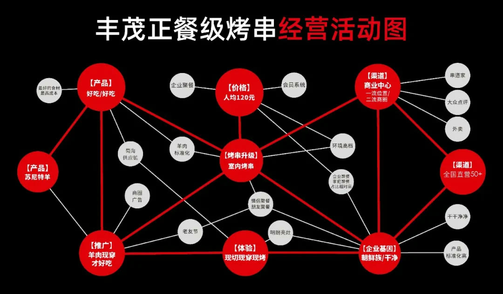
战略定位正餐级烤串，丰茂烤串就能跳出传统烧烤的竞争环境，让资本、社会、顾客、人才、政策五个市场重新认识丰茂烤串，让丰茂烤串从行业之一，成为正餐级烤串的第一品牌，引领烤串行业的第四次创新！
3拳头产品再开发羊中大熊猫，丰茂熊猫羊华与华=战略咨询公司+产品开发公司+广告公司，因为所有的事都是一件事，战略、营销、品牌、产品、广告要在一个体系里完成。对于丰茂烤串，我们设计了烤串行业里的王者符号，提出了正餐级烤串第一品牌的战略，还要开发出正餐级烤串最具代表性的产品。烧烤品牌的产品就是食材，所以每个烤串品牌都在强调自己的羊肉品种。丰茂烤串董事长尹龙哲，为了找到内蒙最好吃的羊肉，带领团队亲赴内蒙，每到一个草原就吃当地的羊肉，从早吃到晚，一路吃遍了六大草原。经过实地试吃后发现，一般的羊吃到第二天就腻了，只有来自锡盟的苏尼特羊，连吃七天都不腻。所以丰茂团队当即决定选用苏尼特羊为丰茂烤串的招牌羊肉，并且提出了“苏尼特羊，好吃不膻”的产品话语。
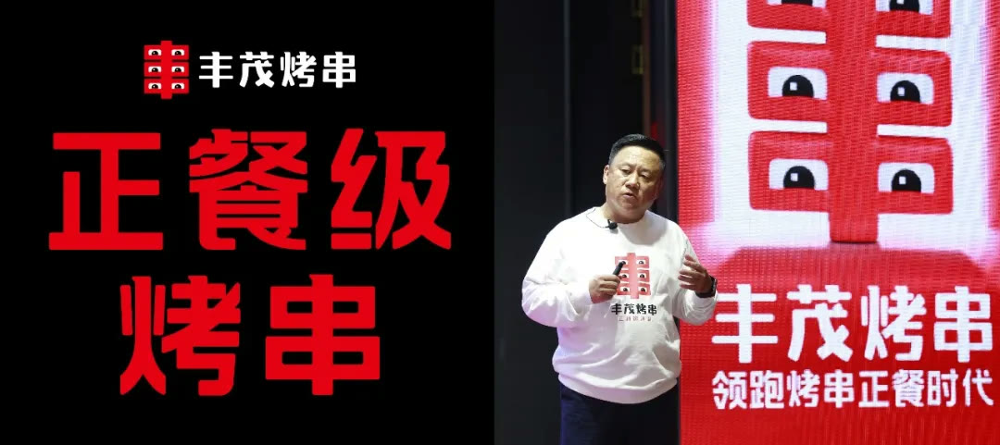
但是后面在经营的过程中发现，虽然苏尼特羊的顾客口碑很好，可是在介绍苏尼特羊的时候难度特别大，顾客记不住，也很难传播出去。在华与华产品开发方法论中，产品的本质就是购买理由和使用体验，产品开发就是洞察一个购买理由，提出一个词语，再用产品去实现它。苏尼特羊，好吃不膻。因为这款产品已经带给了顾客很强的使用体验，所以针对这款产品的再开发，就是对购买理由的再开发。购买理由是我们向顾客发送的产品的信号，当我们发送的信号是苏尼特羊的时候，不认识“苏尼特”的顾客，既不知道它来自内蒙，也不知道它的价值，对这个信号就不会产生行动反射。语言哲学家海德格尔说“词语就是召唤”。苏尼特羊这个命名召唤不出任何画面和价值，沟通成本就很高。所以开发这款产品的购买理由，第一件事就是更改产品命名。
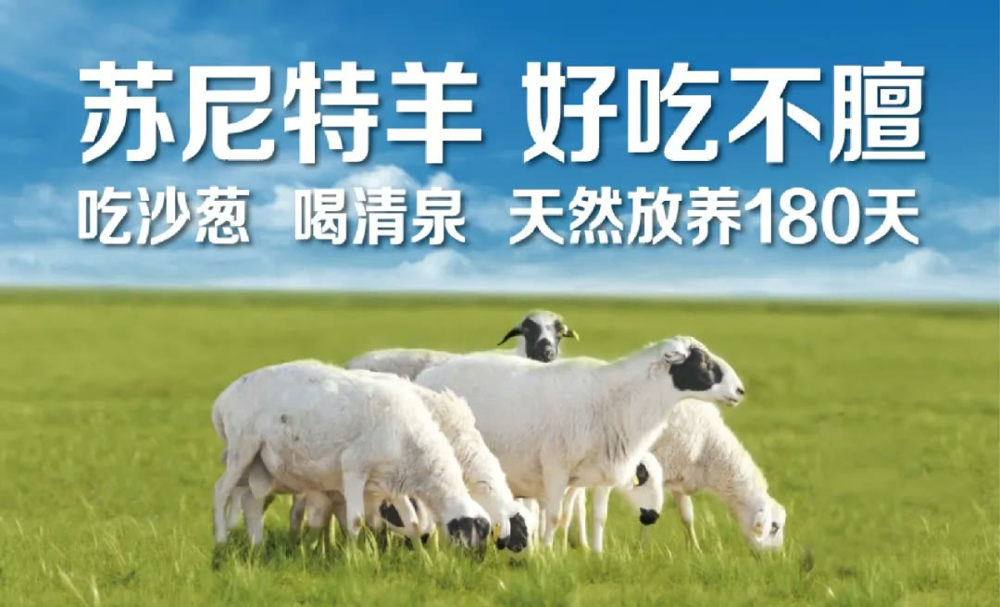
经过资料查证，我们发现苏尼特羊因为独特的黑眼圈外观，长相酷似国宝大熊猫，所以当地牧民们都叫它“熊猫羊”。进一步挖掘后得知，苏尼特羊数量稀少， 2020 年全国羊出栏 31941 万头，其中苏尼特羊只有 55 万头，仅占全国出栏量的 0 . 17 %，和大熊猫一样数量稀少！因此我们将苏尼特羊重新命名为“丰茂熊猫羊”，当我们命名为熊猫羊的时候，这个词语召唤出来的，就是和大熊猫一样珍贵的羊。全世界都知道大熊猫，全世界都遍布着大熊猫的粉丝，所有喜欢大熊猫的顾客，收到这个信号后都有可能做出行为反射！通过这个命名，我们不仅把苏尼特羊独特的，珍稀的价值召唤出来了，还把喜欢大熊猫的顾客也召唤出来了。
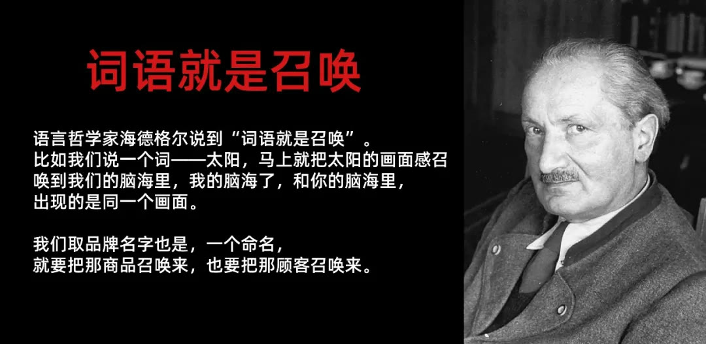
除了命名，我们还创意出了“羊中大熊猫，丰茂熊猫羊”的超级句式。羊中大熊猫就是下断言，这就是最好的羊，是独一无二的，及其珍贵的羊！同时，我们把查证到的数据转化为“ 1000 只羊中约有 1 只”的话语，强化熊猫羊的购买理由。用最直观的数字来放大刺激信号能量。
羊中大熊猫，丰茂熊猫羊。 1000 只羊中约有 1 只！虽然整个产品的购买理由中没有出现极限词语，但是却实现了极限的修辞，通过拳头产品的再开发，帮助丰茂烤串在羊肉串
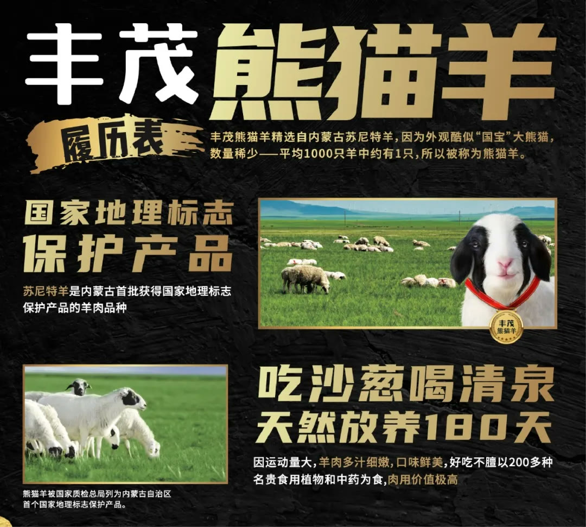
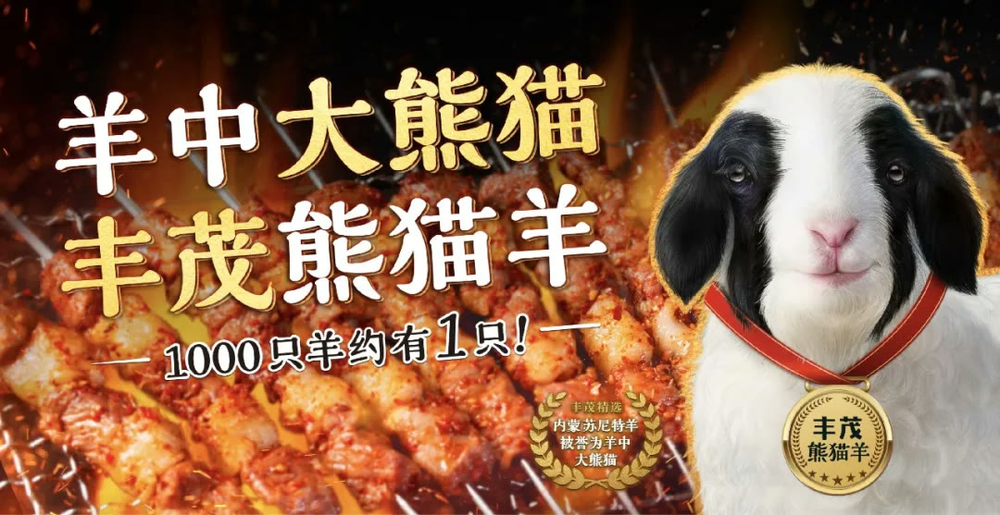
产品中，占据了最好的羊肉认知。
4门店元媒体推广系统新品上市点单率提升 29 . 6 %在华与华方法的媒介环境学理论中，我们把媒介分为“元媒体”和“延伸媒体”。延伸媒体，是我们需要花钱购买才能使用的媒体，比如电视、网络、机场广告牌等。元媒体简单来说就是我们自己身上的、不花钱就可以使用的媒体。比如对快消品来说，元媒体就是产品包装，对于门店来说，元媒体就是门头和店面。一般品牌在新品上线的时候，可能会很在意怎么花钱去做个推广，对元媒体的应用反而不重视，甚至是忽视。但是元媒体不仅是企业最大的免费媒体，更是对企业销售起决定性因素的战略道具。丰茂烤串新产品“熊猫羊”系列一经上市，项目组就马上选择了丰茂烤串上海吴中路店作为样板门店，开启门店的全面媒体化广告工程。根据顾客在门店里面的动线，设计全流程接触点体验。首先，在消费者进店前，我们将丰茂熊猫羊的新品发布，主题化为“丰茂烤串镇店之宝发布”，在楼梯口和店门口拉横幅，营造活动氛围，吸引消费进店，制造消费者期待。进店后，通过遍布整个门店的吊旗，通过重复营造阵列感，把新品上市节日化，放大新品上市的信号能量。

区别于快餐，丰茂烤串的门店没有前台，点单都是直接在座位上扫码进行的。所以我们将座位区直接开发成收银台，顾客在落座后，通过沙发贴，立式菜单，和烤炉遮板三大件拉出熊猫羊物料 360 度的环绕包围圈，在半封闭的环境里面持续释放熊猫羊的刺激信号。
在扫码点单的时候，扫码牌上再做最后一次提醒，并且在点单小程序的菜品图上露出熊猫羊的形象。这样就实现了从门店氛围物料到扫码下单的全流程接触，持续影响顾客的点单偏好，让顾客下单熊猫羊就像坐滑滑梯一样，一路滑到下单按钮。
丰茂烤串的门店元媒体系统，将整个门店设计成了一个高效的转化工具，在没有花钱做额外推广的情况下，让门店自己会带货！
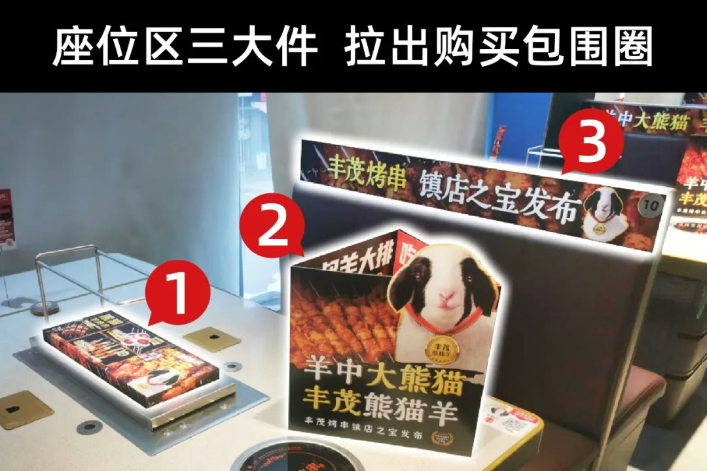
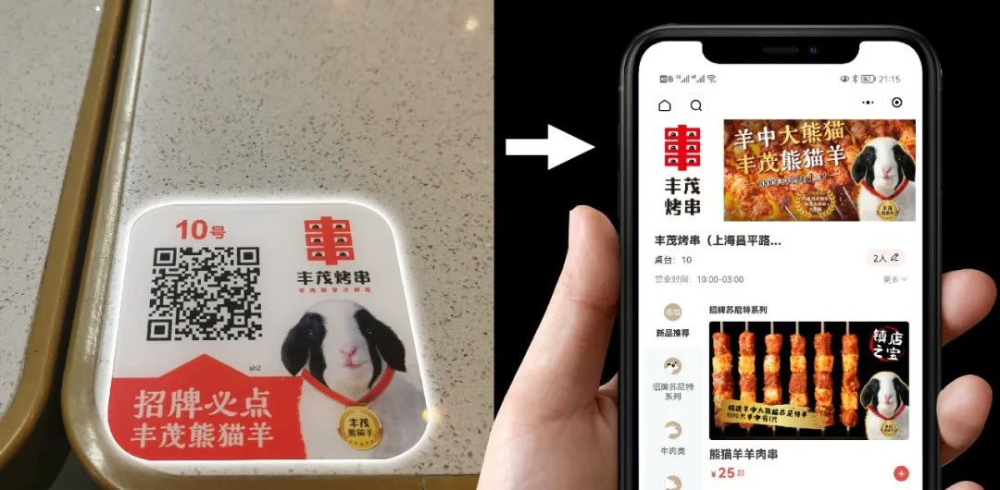
经过门店的全面媒体化广告工程改造后，丰茂烤串上海吴中路店的苏尼特羊肉串，单品的点单率从 62 . 5 %提升到了 81 %。本文总结华与华首创的品牌理论——品牌三角形，即产品结构、话语体系和符号系统。通过品牌三角形，帮助丰茂烤串搭建起了完整的品牌架构，实现了品牌定型：1 、为丰茂烤串创意了信号、识别、图腾三位一体的，代表行业的最强信号，超级符号“丰字串”；2 、基于丰茂烤串的基因禀赋和经营活动，为丰茂烤串确立了正餐级烤串的品牌定位，建立新品类，赢得解释权，让丰茂烤串从行业之一成为正餐级烤串的第一品牌。3 、重新包装并推出了拳头产品“羊中大熊猫 丰茂熊猫羊”，从词语上建立了最好的羊肉认知。最强的行业信号，率先提出正餐级烤串战略，最好的羊肉产品，在品牌三角形的每一条边都做到行业领先，丰茂烤串就能够实现在品牌上的整体领先！